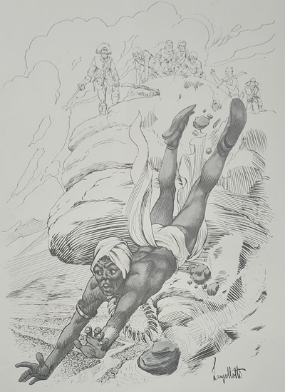

As crianças estavam-se divertindo a valer correndo por entre as árvores enquanto o Arrelia, completamente distraído, contava as nuvens que passavam no pedaço de céu que dali dava para ver. “Uma, duas, três...”Ficou uma porção de tempo neste divertimento. Depois percebeu que negras nuvens de tempestade estavam cobrindo o azul do céu. Chamou as crianças e avisou-as da chuva que ia cair. Foi um “Ah!” geral. Ele pediu-lhes que não ficassem tristes. Se fosse possível, voltariam noutro dia. Mas enfrentar uma tempestade naquele lugar! Não havia necessidade.
- Vamos embora, criançada! – pediu ele. A chuva não vai ser brincadeira. Vamos fazer nosso “quilombo” no hotel.
Como as crianças não conheciam a palavra, ficaram olhando o Arrelia com surpresa. Jaci adiantou-se e quis saber o significado.
- Você não sabe? Ninguém sabe? – perguntou ele.
Todas as cabeças sacudiram-se negativamente.
- Vou explicar – continuou. Mas vamos andando para evitar uma corrida de última hora. Quilombo era o local onde se escondiam os escravos fugitivos. Eu quis dizer para fazermos nosso abrigo no hotel, entendem?
Todas as cabeças sacudiram-se afirmativamente. Mas as crianças continuaram com ar interrogativo.
Vendo pelas suas expressões que não estavam satisfeitas com o esclarecimento, ele prosseguiu:
- A partir do início do século XVII, os escravos que conseguiam fugir das fazendas e dos engenhos começaram a reunir-se em lugares seguros e ali ficavam vivendo em liberdade, longe de seus senhores. Alguns quilombos chegaram a durar muito tempo. Chamavam-se quilombolas os negros que habitavam os quilombos.
Houve muitos quilombos no Brasil, porém o mais importante foi o dos Palmares. Acho interessante vocês conhecerem um fato histórico, não é mesmo?
Na época de que falei, ou seja, no início do século XVII, constituiu-se na região de Palmares, que vai do Rio São Francisco até ao sertão de Pernambuco, um grande conjunto de quilombos. O nome Palmares é devido ao grande número de palmeiras encontradas na região. O quilombo mais importante foi o de Palmares, instalado na Serra da Barriga, onde agora é o Estado de Alagoas. Durou sessenta e cinco anos. Chegou a contar uma população de vinte mil habitantes, o que era uma elevada quantidade de pessoas para a época. Na verdade, era um quilombo formado de vários outros, organizados sob a forma de reino.
- Quanta gente! Então era uma verdadeira cidade! – exclamou Iberê.
- Sim, Iberê. Podia até ser considerado uma pequena nação.

Bem. Quando houve a invasão holandesa, os diversos quilombos que o compunham foram bastante reforçados. Isto porque inúmeros escravos deixavam os lugares onde viviam e iam refugiar-se nos quilombos, aproveitando a ausência dos seus senhores, que também fugiam dos invasores.
Enquanto os brasileiros e portugueses lutavam contra os holandeses, os fugitivos trataram de fortalecer os seus quilombos o melhor possível.
No princípio, para poderem viver, os quilombolas praticavam assaltos às fazendas e povoados mais próximos. Pouco a pouco conseguiram organizar-se, plantavam e trocavam parte das colheitas por outras coisas de que precisavam.
Durante o tempo que os brasileiros e portugueses andaram preocupados combatendo os invasores, os fugitivos puderam trabalhar e organizar-se. Viviam bem “sossegaudos”. Logo, porém, que os holandeses deixaram de ser preocupação, os brancos trataram de combater os quilombolas. Estes não tiveram mais descanso. Ataque daqui, ataque dali...
- Bem que podiam deixar os pobres em paz, não é verdade? – exclamou Marisa, indignada.
- Seria humano, não tem dúvida. Mas acontece que os brancos tinham interesse no trabalho escravo e também temiam que os fugitivos se transformassem numa perigosa ameaça.
Os brancos realizaram vários ataques sem conseguirem arrasar os quilombos, como pretendiam. Os negros resistiam ardorosamente.
- Que valentes, não? – interrompeu Iberê, esfregando as mãos.
- Estavam vem reforçados, haviam guarnecido os quilombos com resistentes estacadas e, além do mais, lutavam pela liberdade. De jeito nenhum queriam tornar a ser escravos.
Muitas expedições tentaram arrasar os refúgios dos quilombolas e nada conseguiram. Por fim, o governo de Pernambuco solicitou ajuda do bandeirante paulista Domingos Jorge Velho, o qual preparou uma expedição para derrotar os fugitivos.
- Eles não davam mesmo folga, não, Arrelia? – disse Sérgio pensativamente.
- É verdade. Estavam decididos a acabar com os quilombos, custasse o que custasse.
Também Domingos Jorge Velho falhou nas primeiras tentativas. Os quilombolas lutavam com “vontade”. Mas ele não desistiu. Tratou de organizar um exército mais numeroso e armado, com o qual pudesse arrasar de uma vez os inimigos. Ao cabo de algum tempo, o bandeirante conseguiu organizar um exército realmente poderoso. Mesmo assim a resistência dos quilombolas foi tão grande, tão valente que a luta durou perto de três anos. Durante este período, os combates eram contínuos, quase sem descanso.
Naturalmente os negros tinham uma desvantagem: eles eram os cercados. Enquanto os atacantes podiam conseguir reforços e munições de fora, ainda mais contando com o interesse do governo, os quilombolas encontravam-se sozinhos e apenas podiam contar com o que possuíam. É claro que um dia a munição dos sitiados tinha de esgotar-se. Quando esto se deu, muitos dos negros fugiram para o sertão. Outros suicidaram-se ou renderam-se aos atacantes. Imaginem o que não deve ter acontecido com os que se renderam.
O mais comovente foi o que aconteceu, segundo a tradição, com Zumbi, o chefe do Quilombo dos Palmares, e com vários de seus companheiros. É interessante conhecer tudo desde o começo. Foi assim:
Logo no princípio do Quilombo dos palmares foi escolhido o primeiro rei dos negros. Chamava-se Gangazuma. Habitava um palácio denominado mussumba, juntamente com seus parentes, ministros e auxiliares mais próximos. Organizara e mantinha sob seu comando um verdadeiro exército.
Um dia, morreu Gangazuma. Os quilombolas ficaram tristes, mas a vida precisava continuar. Necessitavam de um novo rei.
Zumbi, que era muito inteligente e homem de impressionante coragem, tornou-se o novo chefe. Revelou-se um grande administrador e fez os quilombos progredirem bastante. Todos tinham de trabalhar. Os quilombolas, dirigidos com inteligência, iniciaram a criação de gado e a cultura da terra. Foram aplicadas inúmeras e importantes leis, dando ordem e disciplina à população. Parecia estar-se realizando o grande sonho de Zumbi, que era construir um império dirigido e habitado somente por negros.
Apesar dos constantes ataques dos brancos, a resistência dos quilombolas fazia crer que o império estava realmente construído. Mas deu-se o ataque comandado pelo bandeirante Domingos Jorge Velho, e o sonho de Zumbi desfez-se para sempre.
Zumbi resistiu o quanto pode. Por fim, vendo tudo perdido, procurou uma alta montanha e jogou-se no abismo. Muitos de seus companheiros preferiram morrer com ele e atiraram-se também no despenhadeiro. Diante da certeza de terem de viver na escravidão, preferiram a morte.
- Que coragem! Pular no abismo! – exclamou Iberê, quase gritando.
- Vejam como eles consideravam a liberdade. Nós podemos fazer uma idéia do que era a escravidão mas nem é bom pensar.
- E depois não conseguiram mais formar outros quilombos? – quis saber o menino.
- Não, não conseguiram mais. Houve outros quilombos depois da destruição dos Palmares, porém eram diferentes. Como sabem os nossos abolicionistas, homens que lutavam para acabar com a escravidão no Brasil, não mediam sacrifícios para libertar e proteger os escravos. Faziam de tudo para que os negros fugissem dos seus senhores. Se os fugitivos, porém, ficassem nas proximidades das povoações acabariam sendo aprisionados. E não era pequeno o castigo que os esperava. Os abolicionistas trataram então de organizar refúgios seguros nas matas e nas serras onde os fugitivos pudessem aguardar em paz a hora da liberdade.

- Que foi concedida pela Princesa Isabel.
- Isso, Iberê, muito bem.
Os abolicionistas organizaram vários destes quilombos. O mais importante foi o de Jabaquara, em Santos. Chegou a abrigar perto de dez mil fugitivos.
- Ainda bem que conseguiram libertar-se, não, Arrelia? – continuou o menino.
- É, ainda bem – completou o Arrelia, dando uma risada.
- O que foi, Arrelia? – surpreendeu-se Carlinhos. Por que está rindo? Que graça achou numa estória tão triste?
- Não, não foi na estória que achei graça e sim no que fizeram umas crianças por causa desta estória. Aconteceu numa fazenda em que estive. Alguns meninos que viviam lá começaram a pedir-me para lhes contar alguma estória. Contei-lhes a estória do Quilombo dos Palmares, mais ou menos como contei a vocês. Eles ouviram-me com a maior atenção. Logo depois de eu haver terminado, os meninos resolveram ir brincar. Ouvi um dizer:
- Vamos brincar?
Outro perguntou:
- De que? Já brincamos de tudo! Não temos mais do que brincar!
Aí um terceiro exclamou:
- Já sei! Podámos brincar de uma coisa!


- De quê? – perguntaram todos ao mesmo tempo.
- De Quilombo dos Palmares! A estória que o Arrelia contou!
- É mesmo! – gritaram uns.
- Boa idéia! – exclamaram os outros.
O inventor da brincadeira era um pretinho parecido com o Carlinhos. Estava tão contente que parecia ir estourar.
Foram brincar perto dali. Fizeram questão de seguir a estória direitinho. Convidaram-me para brincar com eles. Eu estava quase indo, mas quando soube que o meu papel ia ser de escravo, desisti. Já pensaram? Levar umas “bolauchas”?
Do lugar onde eu estava podia ver e ouvir parte da brincadeira. Como eram poucos, precisavam representar vários papéis. Assim, ora eram senhores de escravos, ora escravos; ora atacantes. Eu disse que deste jeito aceitava a brincadeira. Não concordaram. Eu tinha de ser sempre escravo. Desisti. Eles possuíam boa memória. Não esqueceram nada. Até os assaltos que os fugitivos tinham efetuado às povoações eles fizeram. As povoações eram os cômodos da casa da fazenda e nem é preciso dizer fui atacado por eles.
O pretinho foi escolhido para ser Gangazuma e Zumbi, fazendo outros papéis também, como eu disse. Não cabia mais em si de tanto orgulho. Depois vieram negociar como faziam os quilombolas. Também fui escolhido para negociar.
- E que negócio fizeram? – quis saber Sérgio.
- Ah, Sérgio, você não faz idéia! Primeiro levaram minha “bengaula” e deixaram ums banana. Não se contentaram, trouxeram outra banana e levaram meu paletó e o chapéu.
- Puxa! Só banana eles lhe davam? – admirou-se Sérgio.
- Não. Desta vez trouxeram uma goiaba e queriam minha gravata e minha camisa. Fiquei sem gravata e sem camisa. Aí voltaram com outra goiaba. Reagi. Disse que chegava. O que! Depois da camisa queriam também as calças! Já pensaram? Como não concordei, declararam que eu era um inimigo. Aqui eles mudaram um pouco a estória. Vocês não imaginam. Aquela criançada atrás de mim, gritando: “Pega! Mata! És um inimigo!” Saí correndo para escapar daqueles meninos. Dei uma corrida com eles quase me pegando. “Por que contei a estória?” – eu pensava. Consegui escapar e entrei no primeiro lugar que encontrei: um quartinho de madeira, escuro que dava “meudo”. Passaram correndo e não se lembraram de olhar ali. Fiquei na porta meio curvado, só a cabeça de fora, vendo se não iam voltar. Ah! Vocês não sabem o que me aconteceu.
- O que foi, Arrelia? – perguntou Jaci.
- Olhe, Jaci, levei uma batida tão forte que me fez pensar: “Fui atropelado!” Era um bode! Que pancada! Caí estendido na poeira. Quando vi que ele não estava com boa cara, saí andando de quatro, apavorado. Aí a dona da casa ia chegando e deu comigo daquele jeito.
- Mas o que aconteceu. Seu Arrelia? – perguntou ela. O senhor, correndo de quatro pelo terreiro, sem camisa!
Fiquei todo envergonhado. O marido dela também veio e os dois ficaram-me olhando com a cara mais espantada deste mundo. O marido da dona da casa disse:
- Veja só o Arrelia! Que divertimento mais esquisito!
A dona da casa, afastando-se uns passos, olhou para mim com cara de piedade e perguntou ao marido:
- Será que houve alguma coisa com a cabeça dele?
Depois que contei o caso, foi uma risada só. Até perderam o fôlego.
Quando vi que os meninos vinham voltando, preparei-me para correr novamente. Por sorte, os donos da casa interferiram e as crianças devolveram minhas coisas e deixaram-me em paz.
A brincadeira continuou entre eles. De onde eu estava podia ouvir os gritos que davam. Pensei: “Deve ser a hora do ataque ao quilombo.” E era mesmo. De repente o pretinho entrou em casa que nem um furacão. Vinha “assustaudo”, com uns olhos deste tamanho. Atrás dele vinham os outros gritando: “Pega! Pega! Ele vai escapar!” O dono da fazenda mandou que parassem com aquela algazarra.
- Mas o que está acontecendo? – perguntou ele.
O pretinho, tremendo e suando, esclareceu:


- O Arrelia ensinou uma brincadeira em que no fim o chefe, um tal de Zumbi, salta num abismo! Como faz de conta que sou o Zumbi, os outros meninos querem que eu pule daquela árvore grande que tem depois do pomar!
O dono da casa ficou horrorizado:
- Aquela árvore é muito alta! É morte na certa!
Eu, muito distraído, disse:
- Mas não foi de uma árvore que o Zumbi pulou! Foi de uma alta montanha e caiu no abismo!
O homem suspirou:
- Ainda bem que aqui não há montanha nem abismo.
Olhou para mim com ar de reprovação e perguntou:
- - Isso é brincadeira que se ensine, Arrelia?
A mulher dele, então, sacudindo a cabeça, disse:
- Que perigo! Podia até ter havido morte!
Fiquei atrapalhado e tentei explicar:
- Mas não mandei que brincassem! Só contei a estória!
Ela continuou:
- Há coisas que não devem ser contadas a crianças!
Resolvi não falar mais nada, pois minha sorte não estava boa naquele dia. Que “criançauda”! Vocês acham que tive culpa?
- É claro que não, Arrelia! – gritou Jaci, seguida pelas outras crianças.
- Tenho certeza de que vocês não fariam o que eles fizeram. Bem, estamos perto do hotel.
- Sérgio! – chamou Iberê.
- O que você quer, Iberê?
- Até que não é ruim a idéia. A gente podia fazer essa brincadeira mais tarde. Se o Arrelia deixasse...
- O quê? – gritou o Arrelia. Ai não! O que foi que fiz? Nem pensem nisso! – O Carlinhos podia ser o Zumbi! – sugeriu Iberê.
Carlinhos agarrou-se ao Arreelia:
- Quem? Eu? Socorro, Arrelia! Veja como eles me estão olhando! Não quero quebrar o pescoço, não!
Zumbi resistiu o quanto pôde. Por fim, vendo tudo perdido, procurou uma alta montanha e jogou-se no abismo.
